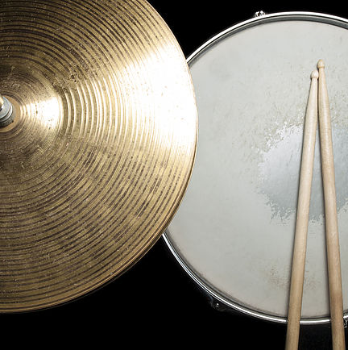

...sind unsere Herzensanliegen
David
Gitarre, Piano, Keyboard, BassChristine
Songwriter, Violine, Piano, Keyboard, Musikalische UmsetzungDaniel
Percussions, TenorJennifer
Piano, HarfeMichael
Keyboard, PianoSabine
Piano, KeyboardRahel
Violine, Viola, Piano, Keyboard, Orgel, Musikalische UmsetzungMarkus
Piano, Keyboard, Songwriter

Ergänzung
Drums, Querflöte, Cello,...Ihre Wünsche – vier Schritte
-
Beratung
In einem ersten Vorgespräch schildern Sie uns Ihre Wünsche. Erste Ideen werden skizziert.
-
Umsetzung
Ihre Wünsche und Ideen kommen nun in unseren musikalischen Maschinenraum, wo sie umgesetzt und eingeübt werden.
-
Ihr großer Tag
An Ihrem großen Tag geht es nur um Sie. Sie stehen im Mittelpunkt. Damit das so sein kann, geschehen unser Auf- und Abbau völlig geräuschlos im Hintergrund.
-
Erinnerungen
Nach Möglichkeit finden Sie - nachdem Sie wundervolle Flitterwochen verlebt haben - in Ihrem Briefkasten Ihre exklusive Ein- und Auszugsstücke auf CD.
Testimonials
-
Danke für einen unvergesslichen Beitrag zu unserem unvergleichlichen Fest! Auswahl der Lieder, Umsetzung, Einbindung in die Trauung - Service aus einer Hand.
Marina und Christian Hirsau -
Unsere Märchenhochzeit wurde Realität - dank HERZTÖNE! Tausend Dank für alles!
Rachel und Michael Langensteinbach -
Diese Zeilen des Dankes können wir nur mit Freudentränen der Rührung in den Augen schreiben. God bless you!
Tanja und Sven Gräfenhausen